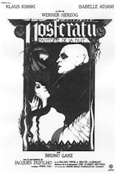
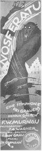
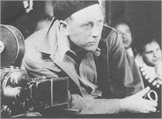
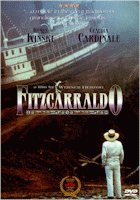

Contents | Features | Reviews | News | Archives | Store

Contents | Features | Reviews | News | Archives | Store
 |
Modern Noseratu by Gregory Avery |
There
is one other version of Nosferatu, which was first shown a little over 20
years ago, this month. Nineteen seventy-nine was the year of "Hollywood's
scary summer", as Newsweek called it. Dawn of the Dead, Alien,
and The Amityville Horror all premiered within months of each other. That
summer, George Hamilton also surprised everybody by appearing as a very
magisterial, and very funny, modern-day Count Dracula in Love at First Bite,
which also had a wonderful, and scandalously underrated, comic performance by
Artie Johnson as Renfield. But what everybody was looking forward to was the new
film version of Dracula, opening on Friday, July 13, with Frank Langella
reprising his critically praised, and enthusiastically received, recent Broadway
performance as the Count.
With
a full head of upswept black hair, a melting but galvanic stare, and gestures
that had a stealthy, sensuous grace, Langella fully brought to the fore the
inherent sexual influence that the character had over women, as he moved through
settings that were designed by the artist Edward Gorey , using the same
black-and-white, ink-drawn style used in his macabre illustrations for books and
magazines. The effect was to highlight the fleeting appearances of red in the
staging, whether it be a glass of wine, a rose, or a pocket handkerchief.
Langella
would turn out to do a perfectly fine job transferring his stage performance to
the screen; the rest of the film was another matter. Crudely directed by John
Badham, it went in for sheer shock effect at every turn, whether it be rotting
flesh, grotesque acts of sudden violence, or people eating live bugs off of
walls and metal bars thick with mildew, all filmed in a style that could best be
called Decomposition Chic. (There were to have been two competing Dracula
films that year, one by director Roger Vadim, the other by Ken Russell, who
wanted -- in a daring move that just might possibly have worked -- to cast Brad
Davis as the Count. Neither project got beyond the completed script stage,
though Russell would later make a film of Bram Stoker's last novel, Lair of
the White Worm, in 1988.)
Much
had befallen the Count during the ensuing forty-nine years since he first strode
the London and Broadway stages. He had been dramatized, humorized, musicalized,
transformed into a Groovy Ghoulie and a Sesame Street character, made to
promote a chocolate breakfast cereal, and, in The Vampire Happening,
would up in bed with several girls. He produced a "Son", a
"Daughter" (previously noted), and had a "Wife" (Sylvia
Kristel, no less), several "Brides" and one "Dog". And
Francis Coppola's 1992 film would finally make a direct cinematic link between
the character and Vlad Tepes, the psychopathic 15th century Romanian ruler who
inspired Bram Stoker to write his vampire novel in the first place.
In
1978, the producer Michael Gruskoff provided U.S. financing, along with French
and West German sources, for a new film version of Nosferatu, which would
be directed by Werner Herzog, one of the three leading members of the New German
Cinema movement of the Seventies, and whose dreamlike style was most closely
related to Murnau's. Herzog would direct Klaus Kinski, with whom he had
previously worked on Aguirre, the Wrath of God, French actress Isabelle
Adjani, and Swiss actor Bruno Ganz, three of the top international performers at
the time.
I
saw Herzog's Nosferatu the Vampyre in the fall of 1979, with an audience
in a Salt Lake City theater, some of whom didn't know that the film was
subtitled. When the subtitles first appeared, a groan arose from the back of the
auditorium. But nobody left: by the end of the picture, everyone was riveted to
what was occurring on the screen.
 "The
film is not being remade, it is being reborn," announced Lotte Eisner,
after a visit to the film's set. Herzog's Nosferatu, Phantom der Nacht
synthesized elements from both the Murnau film and its source, Stoker's
"Dracula". It retained the film's setting, a German coastal town in
the early 1800s (only calling it "Wismar", the name of the actual town
used in Murnau's film, instead of "Wisborg"), but it incorporated the
names of Bram Stoker's characters -- the estate agent Jonathan Harker is sent
into Transylvania by his employer, Renfield, to deliver documents for a new
house to Count Dracula; Harker's wife, Lucy (not Mina -- the switching of Lucy
and Mina's names occurred when the novel was transferred to the stage), stays
behind, sensing danger in what lays ahead. When Jonathan first meets the Count,
Dracula, looking just like Max Schreck did in Murnau's film, greets him with
almost the same greeting Stoker's Dracula gave to Harker: "I am Dracula.
Welcome to my house....Come in. You must be tired and hungry."
"The
film is not being remade, it is being reborn," announced Lotte Eisner,
after a visit to the film's set. Herzog's Nosferatu, Phantom der Nacht
synthesized elements from both the Murnau film and its source, Stoker's
"Dracula". It retained the film's setting, a German coastal town in
the early 1800s (only calling it "Wismar", the name of the actual town
used in Murnau's film, instead of "Wisborg"), but it incorporated the
names of Bram Stoker's characters -- the estate agent Jonathan Harker is sent
into Transylvania by his employer, Renfield, to deliver documents for a new
house to Count Dracula; Harker's wife, Lucy (not Mina -- the switching of Lucy
and Mina's names occurred when the novel was transferred to the stage), stays
behind, sensing danger in what lays ahead. When Jonathan first meets the Count,
Dracula, looking just like Max Schreck did in Murnau's film, greets him with
almost the same greeting Stoker's Dracula gave to Harker: "I am Dracula.
Welcome to my house....Come in. You must be tired and hungry."
To
play the vampire count, Kinski's head was made hairless and white as bleached
stone; his hands, when he gazes upon a pocket cameo of Ellen, have the long
curling fingernails of a corpse. (Both the nails and the hair continue to grow
after death -- one of the reason's why Gary Oldman's Count had such long hair at
the begining of Coppola's film.) But the nails have been cut so as to give the
vampire's hands the movement and appearance of a spider. And the teeth have been
shaped so that they resemble those of a viper, rather than a rat. (This film,
and 1980's Raging Bull, were the two films that first got serious talk
started about creating a permanent Makeup F.X. category at the Academy Awards.
The makeup for Herzog's film was done by Reiko Kruk and Dominique Colladant.)
Herzog's
Nosferatu is still the bearer of plague. Rats are again found in the boxes of
earth which he takes with him to Wismar. The colours of the film gradually
change to those of "light and shadow" (rather than "black and
white") before its conclusion. As David Denby put it, Herzog's Nosferatu
is "less a horror film than an extraordinarily beautiful poem of
death". Even the rats that accompany the Nosferatu in the film have been
drained of colour: brown when they are loaded on-board the ship, they are white
by the time they reach Wismar.
Herzog
filmed the scenes set in Wismar in the beautifully preserved Dutch town of
Delft. He also found a set of building fronts in Lübeck that were, if not the
same ones, then closely resembled the ones seen in Murnau's film for Orlok's new
home. Jonathan takes leave of Lucy -- "the dearest thing in the world to
me" -- by riding away on horseback. (Ganz's Jonathan leaves his hand
extended in farewell, towards his wife, as if he can't bear to break the touch.)
After a fade-out, we see him riding into Transylvania, across the Tatra
mountains -- the same locale that Murnau used over half a century before.
 For
the Count's castle, Herzog chose Karenstad, located not far from Vienna just
over the Czech border. The interiors turn out to be made almost entirely of
white stone. As Harker partakes of an elaborate supper, Dracula gazes longingly
at the young man, eating and drinking just like any other human being. When
Harker cuts himself, accidentally, the vampire can scarcely maintain his
composure at the sight of fresh blood, and, in an act that is only hinted at in
Henrik Galeen's earlier screenplay, sets upon Harker's bleeding hand (muttering
something about the danger of contracting "blood poisoning" from the
knife as an excuse). Harker recoils before this can go any further, after which
the vampire says that he was only acting in a way that was "all for the
best".
For
the Count's castle, Herzog chose Karenstad, located not far from Vienna just
over the Czech border. The interiors turn out to be made almost entirely of
white stone. As Harker partakes of an elaborate supper, Dracula gazes longingly
at the young man, eating and drinking just like any other human being. When
Harker cuts himself, accidentally, the vampire can scarcely maintain his
composure at the sight of fresh blood, and, in an act that is only hinted at in
Henrik Galeen's earlier screenplay, sets upon Harker's bleeding hand (muttering
something about the danger of contracting "blood poisoning" from the
knife as an excuse). Harker recoils before this can go any further, after which
the vampire says that he was only acting in a way that was "all for the
best".
Herzog
claims that, before filming this scene, Kinski went into one of his usual
screaming fits -- about an hour-and-a-half's worth -- before bellowing his way
down to a level at which he could perform. Nonetheless, Kinski gives a
remarkably nuanced and well-gauged performance for someone given to such
unbridled extremes of behavior. His characterization has both menace and pathos.
When he encounters Lucy for the first time, it is love -- "the absence of
love is the most abject of pain" -- that he wants, something that could be
taken, like blood, but not forced from her. He also speaks of time as "an
abyss, profound as a thousand nights", separating him from experience --
like the simple enjoyment of eating and drinking which he longs for yet seems
taunted by the sight of, but cannot tell Jonathan about lest he be regarded as a
monster. (Which he is.) Kinski's vampire is inhuman, yet becomes pitiable all
the more because of it.
Isabelle
Adjani's Lucy takes things considerably more into hand than her counterpart in
Murnau's film. After seeing her worst fear realized -- her husband goes away on
a long trip, and comes back, literally, feeling nothing towards her -- she
reproofs attempts to seek comfort in divine inspiration ("God is far away
when we need him."), and when the Count asks her to give him some of that
same love "which you give Jonathan", Lucy sharply retorts, "I
never will. I won't even give that love to God." I have scarcely seen
Isabelle Adjani look more gorgeous than she does in this picture. The
description "angel of light" is not really all that off the mark.
While everything else in the film turns a dull, chalky white, she continues to
look pure and radiant.
For
Renfield, Herzog cast the author and artist Roland Topor after hearing Topor's
laugh on a French T.V. talk show. Unfortunately, Topor could not speak either
German or English, the two languages the film was being made in, and had to have
all his dialogue post-dubbed. (Some of his hooty, maniacal laugh seems to have
been retained in some scenes.) When he escapes from the asylum (where officials
refer to him as "the one who had bitten a cow"), Renfield asks the
Count what he wishes, and is instructed to go to Riga, where the "army of
rats and the Black Death will follow you". ("Thy will be done! Amen!
Amen!" responds Renfield.) This seems odd until one finds out that Riga was
one of the major commercial ports on the Baltic Sea, at the time.
The
film also has its own especially idiosyncratic touches, such as the Romany boy
who plays the violin under the castle window Jonathan escapes from, and the
clock in the Count's main hall, a more elaborate version of the one seen in the
1922 film and which was specially constructed for Herzog's film. The most daring
departure in the film is turning Van Helsing (Walter Ladengast) into an
exhausted, ineffectual wheeze. Ladengast has a sagging bag of a face accentuated
by a sharp nose, with deep, pronounced lines, and one straggling lock of silver
hair that always seems to be drooping out-of-place. "We shall study this
matter scientifically," he lectures to Lucy, "without prejudice, and
without superstition." Only at the end, when most of the town is wiped-out,
does he suddenly realize all-at-once that they've got a dangerous vampire
running amuck in their midst. (Herzog wrote a special little exchange of
nonsense dialogue for the seventy-seven-year-old actor Clemens Scheitz to
deliver in this sequence. Scheitz is recognizable as one of the townspeople in
"Heart of Glass", the movie where Herzog had all the performers play
their characters while under hypnosis. Here, he plays a town official who has to
arrest someone despite the fact that the police are dead, and so are the
jailers. "Where will you take me, then?" asks the prisoner.
"Yes," Scheitz's character sighs, "I don't know where I'm taking
you.")
Herzog
stages the gradual desolation of Wismar in an entranced, inexorable fashion:
livestock wander the streets, people dance in the square, places of habitation
become devoid of people while the Nosferatu's hoards of white rats take their
places, and what looks like a wedding banquet turns out not to be. ("We've
all contracted the plague. Let's enjoy whatever time we have to live.") And
the final demise of Kinski's Count -- one of the most memorable things in the
whole film, even 20 years after seeing it -- was partly worked out with Herzog,
and partly left to Kinski's resourcefulness.
Henrik
Galeen's screenplay for the 1922 Nosferatu ends with the image of Prof.
Bulwer, looking out a window, hands clasped behind his back. Murnau decided go a
little further than that, adding a glimpse of the ramparts of Orlok's castle as
it is first illuminated by the rays of the new day.
For
his Nosferatu, Herzog goes even further, possibly taking his cue from a
line in Galeen's screenplay which describes the vampire as something that is
born from "the bloody sins of mankind" which "will seek revenge
for the sin committed by the parents and visited on their children and
children's children". The circumstances surrounding the last shot of
Herzog's film came about in the form of, according to him, a happy accident:
filming in the Netherlands, he chanced upon a long, flat expanse of windswept
sandy plane, and it was here that he staged the concluding shot of the film,
later taking footage he had made of gathering storm clouds and superimposing it,
upside-down, so that the clouds appear to be "mushrooming down" on the
horizon. The conclusion is presented in such a way that, says Herzog, after the
final fade-out, the film, "somehow, is going to continue, now. But inside
of us, the spectators...."
Despite
everything, despite its merits and David J. Skal's observation that Nosferatu
was the one film that mined "poetry" from the material of Dracula,
before the accouterments of capes and bats, garlic and coffins, stakes and
fainting-lily women in diaphanous gowns began turning it into kitsch, there is
something about Nosferatu that is vaguely...dismaying, in an
indeterminate way. It is a creature that does not like to be too closely
stalked. It has certainly had a hard time of it, managing to survive over
impossible odds while continuing to inspire people across space and time.
(Witness the number of "Clan Nosferatu" webpages on the Internet.)
And
there is to be another. Elias Merhige, the director of Begotten, perhaps
the first and only anthropological scare picture, was in Luxembourg last spring
filming Burned to Light, a film about the making of the 1922 Nosferatu,
with John Malkovich as F.W. Murnau, Udo Kier as Albin Grau, and Willem Dafoe as
Max Schreck. Judging from the black-and-white production photos, Merhige seems
to have been an ideal choice for getting the visual aspects of the picture down.
(His ability to work with actors, though, remains to be seen.)
It
is perhaps best to conclude, here, on a note about what became of the two
filmmakers who have had previous encounters with the creature referred to as
“der Herren den Ratten” (“Lord of the Rats”):
Photos
of F.W. Murnau show a man whose face radiates, after over half a century, great
spirit tempered with great feeling and sadness. His eyes, set above a straight
nose and an oval face which comes to a point beneath the chin, are commanding,
melancholy, and, in some instances, a little mischievous. His face was said to
have been freckled well into middle age. After Nosferatu, he went on to
make The Last Laugh, Faust, and, in the U.S., Sunrise,
three of the greatest films ever made and whose individual emotional resonance
and depth make most films turned out nowadays seem paltry by comparison.
He
made no bones about his homosexuality, and the fact that he was well-regarded
even by those with whom he had professional fallings-out with speaks much about
his character. After making Sunrise, Murnau went on to make two more
films for the William Fox studios which were taken away from him and recut. He
then went to the Polynesians to make Tabu with Robert Flaherty, who left
the project after Murnau bought out his interest in the film and finished it
himself, over the course of thirteen months. When Murnau returned, he was
offered a contract to work at Paramount. Tabu went on to become a
box-office success. And the Fox studios, hit hard by the beginning of the
Depression, were eventually taken over and combined into another studio,
creating Twentieth Century-Fox.
A
week before Tabu's premiere, in March, 1931, Murnau's chauffeured Packard
stopped at a gas station between Santa Barbara and Monterey, California. He was
being driven to board a ship which would take him to Germany, where he planned
to visit his mother. Murnau allowed his Filipino houseboy to take the wheel of
the car. When they drove off again, the houseboy took a curve too sharply and
caused the car to flip and go down an embankment. Everyone in the car emerged
from the accident safely, including Murnau's dog, Pal. Murnau himself was thrown
from the vehicle, and his head hit either a rock or a post. His face drained of
color, he was transported to a hospital, where he died shortly after. Not long
beforehand, he had consulted a fortune teller, who had told him that he was
fated to arrive at his mother's on April 5, "but in a different manner from
what he expected". Perhaps the way in which Murnau acted prior to the
accident was also due to some sense of where his career as a film director might
be going -- commercial compromise in Hollywood, or working under a film system
in Germany that would be under the control of the emerging National Socialist
party.
Only
eleven people attended Murnau's memorial service in Los Angeles. (Greta Garbo
was one of them.) When Murnau's coffin arrived at the Hamburg docks, on April 5,
every major film director in Germany was there to meet it.
Riding
a wave of critical and popular success, Werner Herzog followed his Nosferatu
with a film of Georg Büchner's Woyzeck, starring Klaus Kinski and the
superb actress Eva Mattes, then set off to Peru to make a film based on the
real-life story of a rubber plantation baron who, at the turn of the century,
wanted to build an opera house in the South American jungle that would attract
Enrico Caruso to sing there. While accomplishing this, the plantation baron,
Fitzcarraldo, decided to haul an intact steamship up and over a mountain that
separated two waterways. Herzog made the film showing a full-sized steamship
being hauled over a mountain.
The
production was beset with problems. Jason Robards, who was to play Fitzcarraldo,
contracted amoebic dysentery while on location and became so ill that he had to
return to the States for treatment. Herzog had to refigure the film on the spot:
the only actor he could get who would tackle the assignment on short notice, and
attract moviegoers, was Klaus Kinski. That meant dropping Mick Jagger's role as
Fitzcarraldo's adjunct, along with a lot of footage that had already been shot.
People
hauling the steamship for the film, by hand, were injured. A couple were killed.
There were revolts among the crew members. The filming was set back by about a
year. In other words, Herzog encountered the same problem that the real-life
Fitzcarraldo encountered: you can't haul an intact steamship over a mountain.
Fitzcarraldo
would win Herzog the Best Director prize at the 1982 Cannes Film Festival. With
his next picture, Where the Green Ants Dream, it became obvious that
whatever had been in him to make feature films in the first place was broken.
Herzog's last feature, Cobra Verde, came out in 1986, and, once again, he
was drawn inexorably back to Kinski, who played a notorious slave trader who
repudiates everything he stood for during the last seconds of the film. Cobra
Verde did not receive a theatrical release in the U.S., a considerable
surprise at the time.
Since
then, Herzog has made documentaries, including the 1992 Lessons in Darkness,
an awesome meditation on the still-burning oil well fires that had been started
during the Gulf War in Kuwait. His newest film is about his longtime
relationship with Klaus Kinski. In it, he recounts an oft-repeated story about
an incident that occurred during the filming of Aguirre, the Wrath of God,
where Kinski tried to storm off the set, deep in the South American jungles, and
Herzog tried to stop him with a loaded pistol. Kinski told him to go ahead and
shoot. Herzog said he will -- eight bullets for Kinski, saving the ninth one for
himself.
"Behold!
The portals of darkness are open and the shades of the dead hunt over the
earth!" - The opening title card for F.W. Murnau's last German film,
"Faust" (1926).
Grateful
acknowledgments to esteemed colleague Sean Axmaker, for information on the
making of the 1979 version of Nosferatu, and to Bernard Bendiel and Gaëlle
Vidalie, of the Cinémathèque Française, for information on the
restoration of the 1922 film. Hans Erdmann's music for the 1922 Nosferatu,
performed by the Brandenburg Philharmonic under the direction of Gillian B.
Anderson, is available as an import CD on the BMG Classics label. Readers may
also want to have a look at Jim Shepard's novel about F.W. Murnau, also entitled
Nosferatu, published through Alfred A. Knopf.
Contents | Features | Reviews
| News | Archives | Store
Copyright © 1999 by Nitrate Productions, Inc. All Rights Reserved.